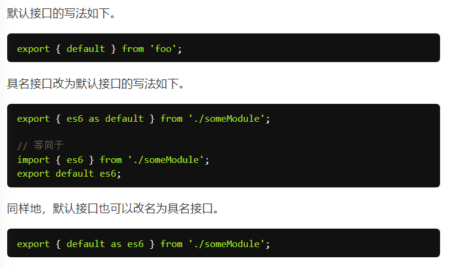

ES6 模块的设计思想是尽量的静态化，使得编译时就能确定模块的依赖关系，以及输入和输出的变量。CommonJS 和 AMD 模块，都只能在运行时确定这些东西
CommonJS 模块就是对象，输入时必须查找对象属性
ES6 模块不是对象，而是通过export命令显式指定输出的代码，再通过import命令输入
ES6 的模块自动采用严格模式
export
export命令用于规定模块的对外接口
一个模块就是一个独立的文件。该文件内部的所有变量，外部无法获取。如果你希望外部能够读取模块内部的某个变量，就必须使用export关键字输出该变量
// profile.js
export var firstName = 'Michael';
export var lastName = 'Jackson';
export var year = 1958;
等价为
// profile.js
var firstName = 'Michael';
var lastName = 'Jackson';
var year = 1958;
export {firstName, lastName, year};
可以用as重命名，可以用不同的名字输出多次
需要特别注意的是，export命令规定的是对外的接口，必须与模块内部的变量建立一一对应关系。
// 报错
export 1;
// 报错
var m = 1;
export m;
另外，export语句输出的接口，与其对应的值是动态绑定关系，即通过该接口，可以取到模块内部实时的值。
这一点与 CommonJS 规范完全不同。CommonJS 模块输出的是值的缓存，不存在动态更新
export命令可以出现在模块的任何位置，只要处于模块顶层就可以。如果处于块级作用域内，就会报错，下一节的import命令也是如此。这是因为处于条件代码块之中，就没法做静态优化了
=============================
import
使用export命令定义了模块的对外接口以后，其他 JS 文件就可以通过import命令加载这个模块。
变量名须与接口名一致，或使用as关键字
import命令输入的变量都是只读的，因为它的本质是输入接口。也就是说，不允许在加载模块的脚本里面，改写接口。
（不过对象可以修改属性，也就是说，“浅只读”）
from指定路径或者模块名（通过配置文件指定）
import命令具有提升效果，会提升到整个模块的头部，首先执行
由于import是静态执行，所以不能使用表达式和变量
可以执行模块而不输入值：
import 'lodash';
多次重复执行同一句import语句，那么只会执行一次，也就是说，import语句是 Singleton 模式
目前阶段，通过 Babel 转码，CommonJS 模块的require命令和 ES6 模块的import命令，可以写在同一个模块里面，但是最好不要这样做。因为import在静态解析阶段执行，所以它是一个模块之中最早执行的。
=============================================================
模块整体加载
符号*指定加载对象
import * as circle from './circle';
==============================
export default命令，为模块指定默认输出
此时，import命令可以为该输出指定任意名字，export default命令只能使用一次且不需要大括号
因为export default命令其实只是输出一个叫做default的变量，所以它后面不能跟变量声明语句
// 正确
export var a = 1;
// 正确
var a = 1;
export default a;
// 错误
export default var a = 1;
可以直接将一个值写在export default之后
export default 42;
如果想在一条import语句中，同时输入默认方法和其他接口，可以写成下面这样。
import _, { each, each as forEach } from 'lodash';
export default也可以用来输出类。
=============================
复合写法
如果在一个模块之中，先输入后输出同一个模块，import语句可以与export语句写在一起
export { foo, bar } from 'my_module';
// 可以简单理解为
import { foo, bar } from 'my_module';
export { foo, bar };
// 但需要注意的是，写成一行以后，foo和bar实际上并没有被导入当前模块，只是相当于对外转发了这两个接口，导致当前模块不能直接使用foo和bar


==================================================================
模块继承

===================================================================
跨模块常量
const声明的常量只在当前代码块有效，跨模块时需要export
// constants.js 模块
export const A = 1;
export const B = 3;
export const C = 4;
// test1.js 模块
import * as constants from './constants';
console.log(constants.A); // 1
console.log(constants.B); // 3
// test2.js 模块
import {A, B} from './constants';
console.log(A); // 1
console.log(B); // 3
===============================================
提案：import()函数，完成动态加载
（因为import命令会被 JavaScript 引擎静态分析；如果import命令要取代 Node 的require方法，这就形成了一个障碍。因为require是运行时加载模块，import命令无法取代require的动态加载功能。）
import()类似于 Node 的require方法
适用于：
- 按需加载
- 条件加载
- 动态加载路径
import()加载模块成功以后，这个模块会作为一个对象，当作then方法的参数